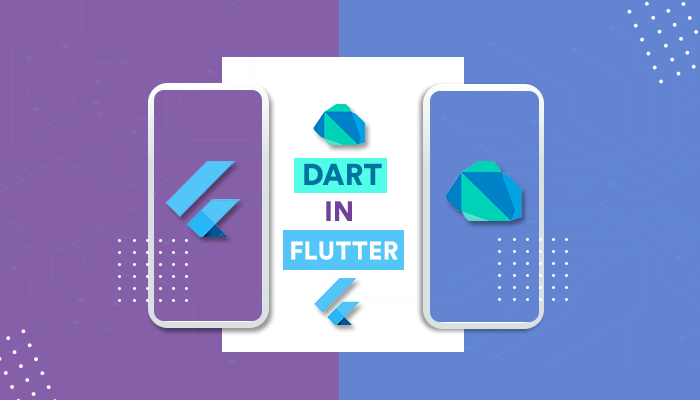

Dart, Google tarafından geliştirilen açık kaynak kodlu bir yazılım dilidir. Dart, mobil uygulamalar, web uygulamaları ve masaüstü uygulamaları gibi çeşitli platformlarda çalışabilir. Dart, kolay okunabilir, anlaşılır ve öğrenilebilir bir dil olmasıyla bilinir ve genellikle mobil uygulama geliştirme için kullanılır. Özellikle Flutter adlı mobil uygulama geliştirme framework’ü ile birlikte kullanılır ve Flutter ile birlikte geliştirilmiştir. Dart, çoklu platform desteği, hızlı çalışma performansı ve güçlü bir type system (tür sistemi) gibi özellikler sunar.
Öğrenmek bir kişinin öğrenme hızına ve önceki yazılım dilleri deneyimine göre değişebilir. Ancak, Dart’ın sözdiziminde birçok benzerlik olduğu için, önceki bir yazılım diline sahipseniz, Dart’ın öğrenimi daha kolay olabilir. Dart, açık ve okunaklı bir dil olup, kodunuzu yazarken düzenli ve düşünceli olmanızı sağlar. Ayrıca, Dart’ta modern yazılım dil özellikleri bulunur ve bu da öğrenimi kolaylaştırır. Örneğin, Dart’da otomatik tür tanımlama (type inference) özelliği vardır, bu da kodunuzu daha okunaklı ve anlaşılır hale getirir.
Dart ayrıca, yüksek performanslı bir dil olup, mobil uygulamalar için kullanılması için tasarlandı. Bu, mobil uygulamalarınızın performansını artırırken, aynı zamanda öğrenimi de kolaylaştırır. Sonuç olarak, Dart öğrenmesi kolay olabilir ve önceki yazılım dillerine sahip olanlar için daha kolay olabilir. Ancak, herhangi bir yazılım dilini öğrenmek için, düzenli çalışma, pratik yapma ve problemleri çözme becerisi gerekir.
Dart, Google’ın Flutter kütüphanesi ile birlikte kullanılarak mobil uygulamalar geliştirilebilir. Flutter, iOS ve Android için uygulama geliştirme platformudur ve Dart dilini kullanır. Flutter ile bir mobil uygulama geliştirirken, tek bir kod tabanı ile hem iOS hem de Android için uygulama geliştirebilirsiniz.
Web uygulamalarıDart, web uygulamaları geliştirmek için de kullanılabilir. Web uygulamaları geliştirirken, AngularDart frameworkünü kullanabilirsiniz. AngularDart, Angular frameworkünün Dart dilinde uyarlanmış bir sürümüdür ve web uygulamaları geliştirmeyi kolaylaştırır.
Dart dilini kullanarak masaüstü uygulamaları da geliştirebilirsiniz. Electron frameworkünü kullanarak masaüstü uygulamaları geliştirebilir ve bu uygulamaları Windows, Mac ve Linux gibi farklı işletim sistemlerinde çalıştırabilirsiniz.
Dart dilini kullanarak, veri işleme ve hesaplama gibi uygulamalar geliştirebilirsiniz. Örneğin, bir veri setini işleyip, çeşitli istatistikler hesaplayabilir ve bunları görselleştirebilirsiniz.
Dart dilini kullanarak oyunlar da geliştirebilirsiniz. Örneğin, 2D ve 3D oyunlar geliştirebilir ve bu oyunları web, mobil ve masaüstü platformlarında çalıştırabilirsiniz
